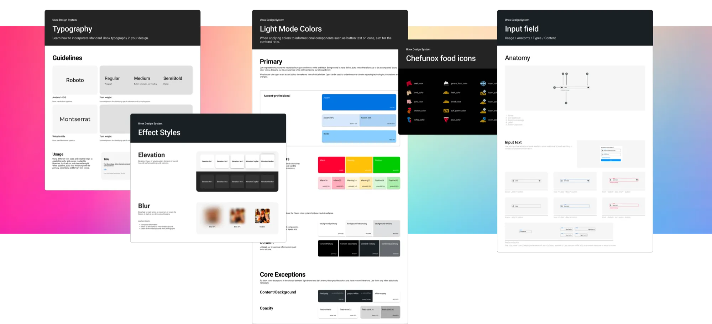
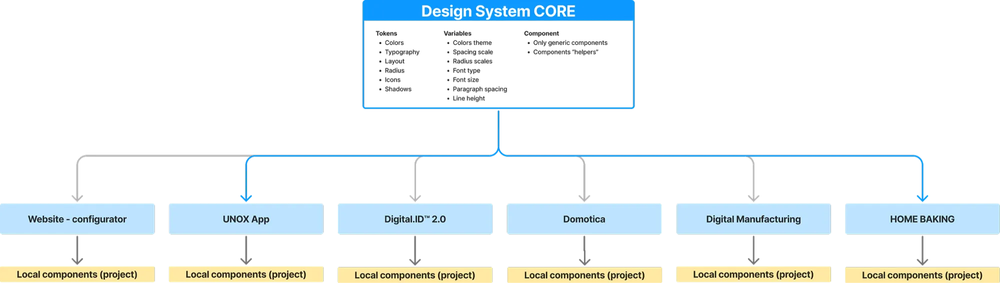
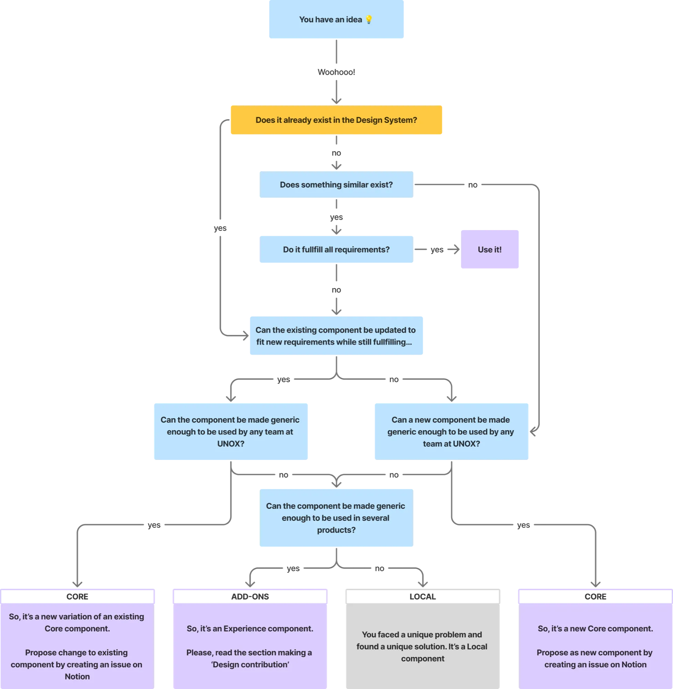
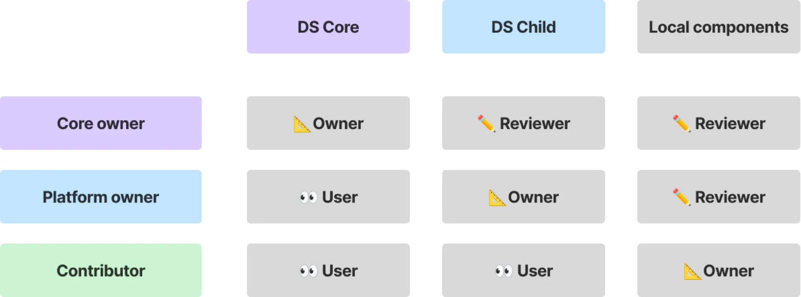
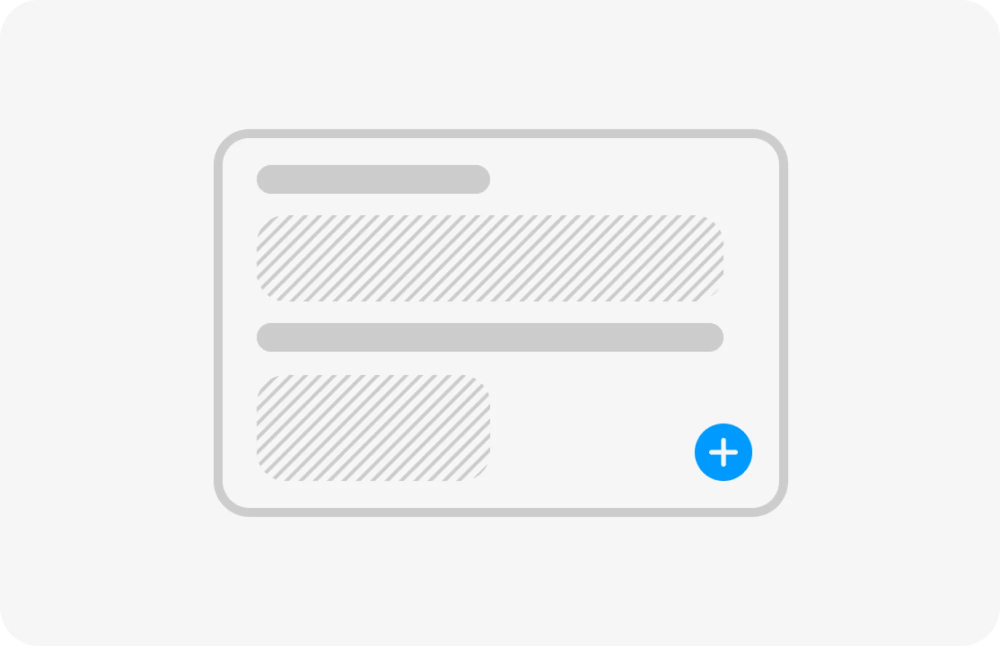
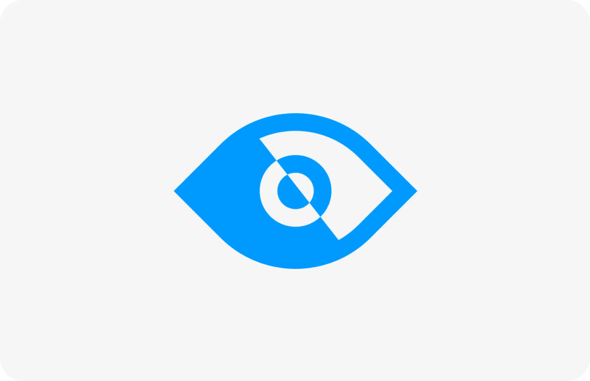
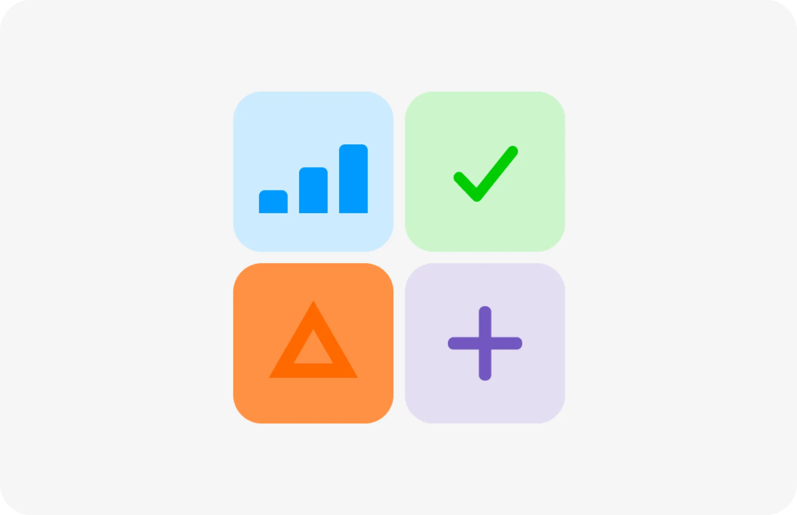
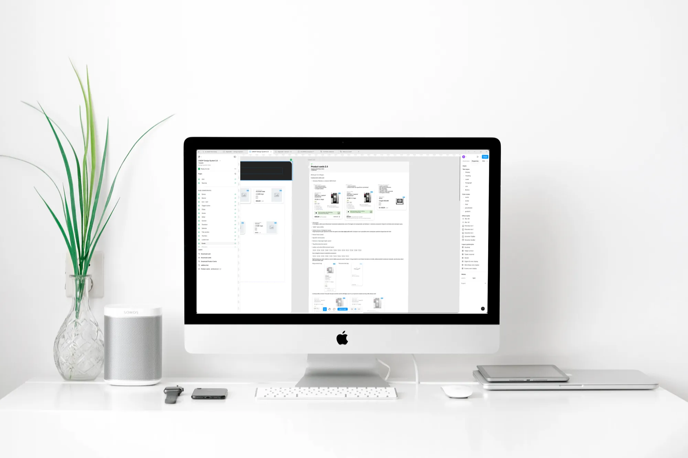
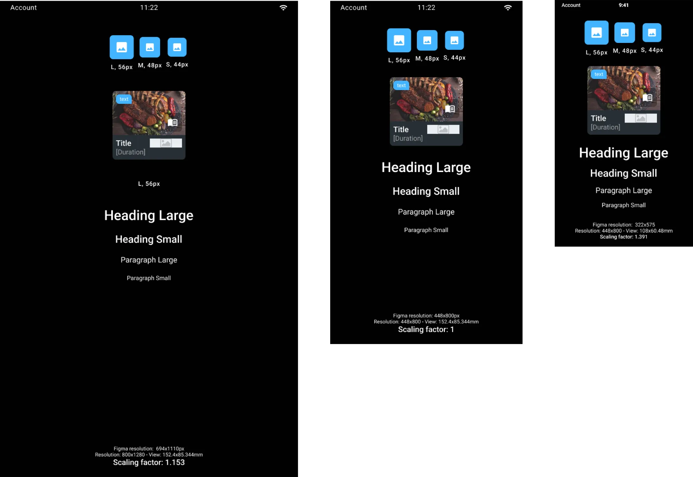
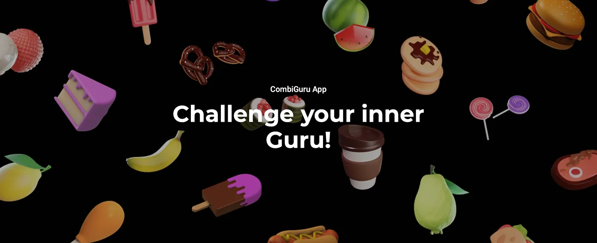

Unox Design System 2.o
A modular, accessible, and scalable system built to grow with our team and products.
Between 2023 and 2024, I co-led the complete overhaul of UNOX’s design system together with another product designer.
What started as a library made by just two first-time people in 2020 needed to evolve into a structured, accessible, and scalable design ecosystem, capable of supporting a growing design team across multiple platforms.
Problem
The original system was visually outdated, technically hard to maintain, and difficult to use for anyone who didn’t build it. It lacked accessibility standards, had no documentation, and was growing in complexity as the number of designers increased.
Outcome
We restructured the system into a modular architecture with a shared core and product-specific kits. It now supports over 10 designers, includes accessibility standards, and drastically improves handoff and usability.
Learning the basics of a design system
Many great companies like Shopify, Apple, and Google’s design systems are public for me to learn from. However, these design systems were huge and served more as an inspiration rather than a guide. What really helped me level up was incorporating Atomic Design principles.
Here's a quick example at how we organized our components using Atomic Design principles, nested components, and component properties and use of variables on different files to simplify variants.
Atoms
- Icons
- Checkboxes
- Buttons
- Avatars
Molecules
- Input fields
- Lists
- Bars
Organisms
- Shipping data selection list
Molecules
- Double content - Modal popup
A modular system
We restructured the system into a modular architecture.
At the center, a Core Design System contains all the base components: typography, colors, icons, spacing, and interactive elements.
Around it, we built child systems tailored to each product line: one for the smart oven interfaces, one for the mobile apps, one for the web platforms and the corporate website.
This approach reduced noise, improved component discoverability, and made maintenance more efficient. Designers could finally focus on what mattered without getting lost in a sea of buttons.

Refining the component creation flow
As the Design System started scaling, one of the biggest challenges was ensuring consistency while keeping contributions from multiple designers manageable. We introduced clear rules and a streamlined flow for adding new components: from proposal and peer review, to documentation and engineering alignment. This reduced duplicates and inconsistencies and made DS more transparent for the growing design team.

Designer experience matters too
Design systems aren't just for users—they’re for designers too. One of the biggest improvements we made was thinking about how people actually use the system in their daily work. We created entry points for different roles (Project Owner, Designer User, Reviewer), grouped elements more intuitively, and reduced the number of component variants to a minimum. Naming conventions were redefined to be descriptive but not overwhelming. The result? Less time lost searching, more time spent designing. And yes, fewer Teams messages asking “can I create a different component that can match my vibes?”

Accessibility: better late than never
The original system didn’t account for accessibility at all—contrast ratios, focus styles, keyboard navigation… it was simply not a priority back in 2020.
In 2025, we finally tackled this head-on.
We reviewed every component against WCAG guidelines, introduced accessible color tokens, standardized focus indicators, and collaborated with developers to ensure ARIA roles and semantic HTML were respected in production.
Now the system isn’t just easier to use, it’s more inclusive by design.



A new way to describe complex components
Not all components are created equal. While buttons and inputs are easy to document, more complex modules—like those linked to CMS content or with multiple behavioral states—require a deeper level of explanation. To address this, we created a standardized template for documenting complex components. This template details not just the visual structure, but also the possible content types, variant rules, and expected behavior in prototyping. By adding this layer of clarity, we made it easier for both designers and developers to align on what a component should do, not just how it should look.

Pixel-perfect across platforms
Designing for embedded interfaces like ovens brought an unusual challenge: pixel ratios and screen densities that didn’t match any of the default Figma presets. We couldn’t rely on typical 1x or 2x scales. To bridge the gap, we developed a custom scaling method that allowed us to design in Figma using a consistent unit system, while still matching the real-life output of the oven screens. This helped us keep interfaces visually accurate across devices and ensured developers had a predictable translation between design and code.

Inpact & Outcomes
- Less time spent on coding new components
- Handoff is lot more efficent (less explanation needed to describe elements)
- Less back and forth during QA
- Coded design is a lot more consistent in every UNOX platform
Other projects
SPEED.Compact
Powering the future of fast food: a sleek, intuitive interface for accelerated ovens that boosts workflows, cuts training time, and delivers consistency across every location.

Comparator
A product comparator that helped customers navigate 1,000 look-alike products, cutting confusion in half and giving sales teams the tool they had been waiting for.

Combi Guru
Combi Guru is Unox’s global culinary challenge, where top schools compete using cutting-edge ovens. The new site inspires and informs students and schools to join action.